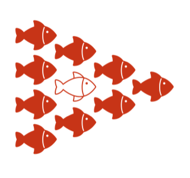
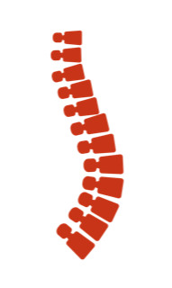
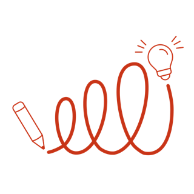
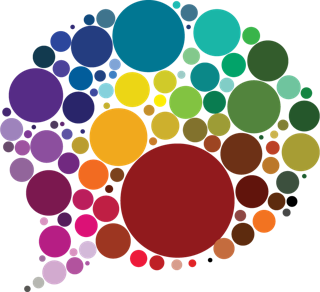

Facilitation of multi-stakeholder processes
Dialogue with diverse stakeholders around shared challenges, for strategic decisions and collective action.
Perspectivity cooperative
we facilitate social systems change
Today’s complexity offers fantastic opportunities for creativity, innovation and collaboration. By embracing complexity, we can create our desired future together.
How we can helpWe bring people with different knowledge, interests and perspectives together, to create space for new insights and responses to complex challenges.

Dialogue with diverse stakeholders around shared challenges, for strategic decisions and collective action.

The power of stories, used in a participatory and inclusive way to unravel patterns in complexity.

Group training and coaching on the job, with tools and methods for complex situations.
Two tools that grew out of our work, now used far beyond it.

Sprockler
Sprockler is our online tool for narrative research. People share a story and interpret it themselves; the patterns appear right away in interactive graphs, with the individual stories at the heart of every graph. Used in evaluations from Timor-Leste to Amsterdam.
Visit sprockler.com (external site)
The Perspectivity Challenge
In The Perspectivity Challenge, players act as world leaders and experience complexity first-hand, then reflect on what they learned. Games on climate, food, public health, fashion, human security and decision making. Played in 24 countries, by 83 organisations.
Visit the Challenge (external site)Open enrolment, or tailor-made for your organisation.
Deepen your facilitation skills and hone them further after Level 1.
Register →An on-the-job learning journey in a collective and participatory learning environment.
Read more → about The Art of Facilitation in ComplexityCollect a large amount of stories and quantify the key patterns in them.
Read more → about Storytelling in complexity (Sprockler)In-company
Stories of ChangeCoResolveAgile ScrumCare for a Common CauseDeep DemocracyWriteshopCRKBO registered: our training courses are VAT exempt.
Human Security Collective
An innovative monitoring and evaluation system for two youth leadership programmes.
Netherlands Embassy in Turkey
A pilot of a sustainable leadership programme for civil society.
Partos
A six-month collective exploration of the future of Dutch development cooperation.
“Human contact is a whimsical process. It can rub, explode, unite or run smoothly.”
What we witnessed and learned.
NewsPartnership Prompt Cards with the Robert Carr Fund.
NewsA game about dilemmas in a health crisis.
A steward-owned cooperative of facilitators, living and working in Europe, the Middle East, Africa and beyond.
Join the cooperative
Are you an independent professional looking for like-minded spirits to increase your impact? Let’s have a virtual coffee.
Working on a complex challenge? We like to think along.
Jean François van Royenweg 16